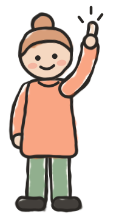
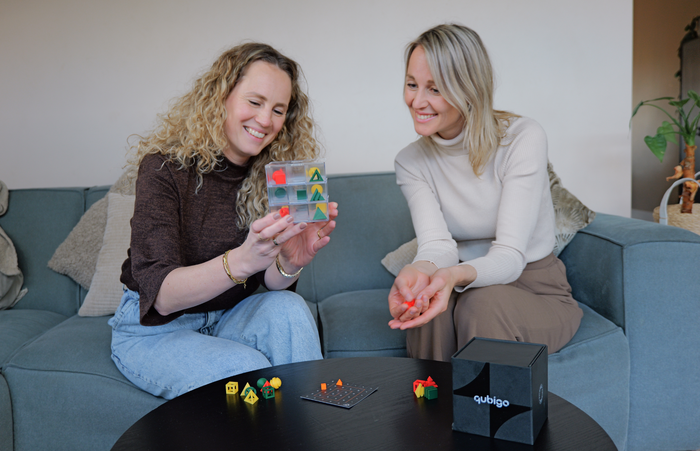
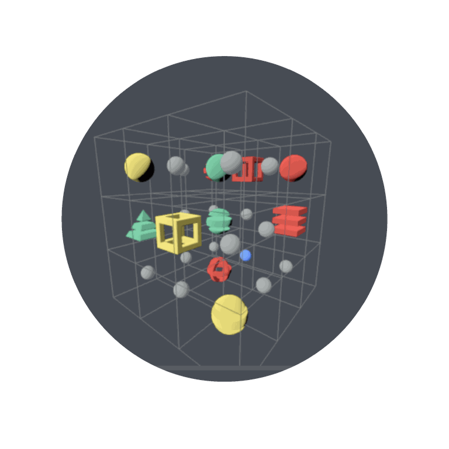
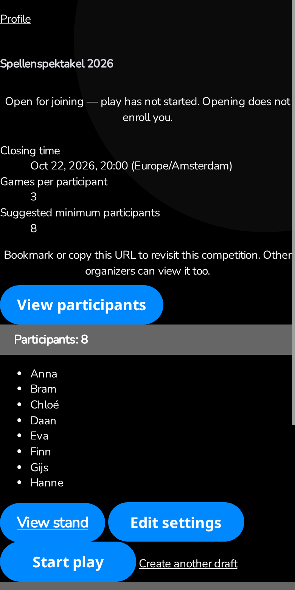
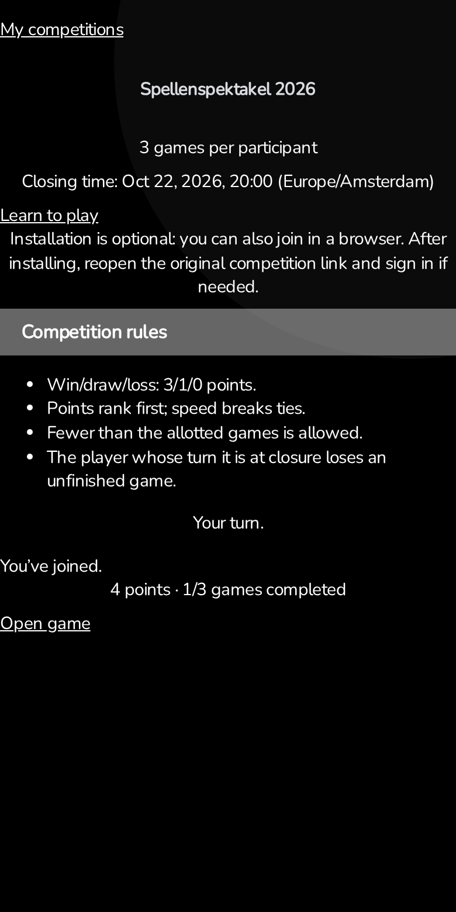
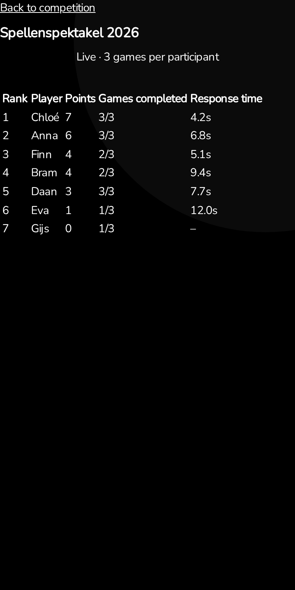

Build a Software Factory · capstone share-out
Go and look at
what it built
A skeptic's factory: Qubigo, kaizen, and one cord pulled.

First, what is Qubigo?
A physical board game

Photo: qubigo.com
- A clear 3×3×3 cube you hold in your hands.
- 27 stones, three properties each.
- Three in a row, in any direction. 2–3 players, 20–30 minutes.
- Easy to learn, hard to master.
The digital edition: an on-ramp
- Web and mobile: play online, pass-and-play, explore the board in 3D, learn in minutes.
- Its job: players fall in love online, then buy the box.
- My capstone target. A real product, real releases, a real deadline.

Look. Then write it down.
1Go and look
現地現物genchi genbutsu

Read the code from run 003 (sessions survive deployments), not just the green checks.
2Find

Long scenario tests: boolean flags, duplicated helpers, sleeping on the wall clock.
3Kaizen ledger
改善kaizen

One note per problem, resolved or open. Idea from Matt Wynne's Memba.
Cause: no test standard, a plan that prescribed test mechanics, a validator that never read test code.
Iteration 004
Competitions, for Spellenspektakel
Scan
QR code at the stand, register, join.
Play
Random pairing, 3 / 1 / 0 points, speed breaks ties.
Close
Unfinished games lost at closing time.
 Deadline:
Deadline: 7–8 November 2026, Jaarbeurs Utrecht.
Background: Spellenspektakel, photo from spellenspektakel.nl
Grilled the requirements. Ran the factory. Tasks 1–6 passed. Task 7 stuck.
The line I started with: careful-plan
004: Games and Competition, entangled
Montparnasse derailment, 1895 (public domain, Wikimedia Commons)
I pulled the cord. Five whys.
アンドンandon: anyone can stop the line
The process checked whether the machinery was correct more than whether it was needed.
| Requirements | Speculative failure cases became mandatory guarantees. |
| Collaboration | Design intent stayed tacit; nobody checked boundaries with me. |
| Design guidance | Documented responsibilities were not upheld. |
| Increments | Plans detailed too far ahead of what we had learned. |
| Handoff | A doer answer without JSON. Still unexplained. |
Same requirements. Second attempt: 004a.
自働化jidoka: the line stops for a human decision
004
- Games'
MakeMove imported a competition protocol
- Hand-rolled
BEGIN IMMEDIATE transactions
- Move and result in two transactions, plus a startup reconciliation scan
- An admission marker with a
cutoff_observed flag
004a
- A clear new Competition bounded context
- Looser coupling: Games doesn't know Competitions
- No unnecessary transactional clutter
- Design walkthrough with me before the plan; next capability only; domain primitives; TDD
17 of 17 tasks done. The device checks I attested myself. Really simpler: my reading, not a measurement.
Now with a design walkthrough: I'm in the loop
004a: Competition beside the others
Dependencies point one way. Games' only look back is a name for a label.
What 004a built

Organizer: open competition

Player: my progress

Organizer: live stand
Real frontend code from the 004a branch, mock data. Bottom tabs added from the app's own tab bar.
What I take away
1Keep looking
We still need to look at the resulting design: the code, or any other probe.
2Slow
Planning with three brains and a design walkthrough feels slow.
3Contract

Sometimes the machines do not obey the contract.
Your turn
What would you
do next?
- How do you guide design, not only implementation, so a plan stays simple?
- Should a validator review design complexity, and with what lens?
- How do I verify 004a's output without reading everything?